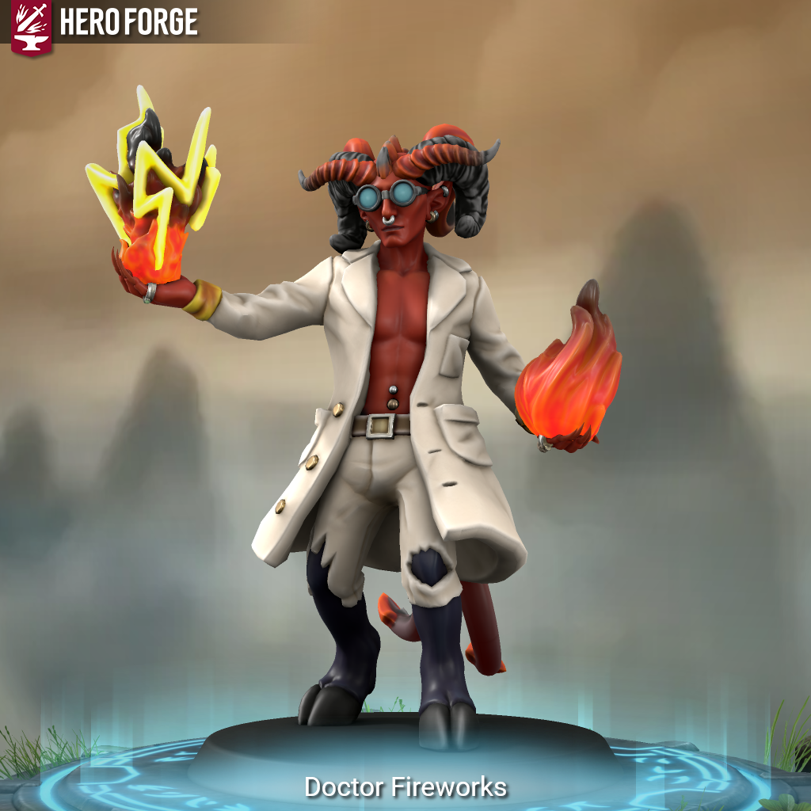

Azrael Pyroxis (Doctor Fireworks) - Is This Anything?

Meet Azrael Pyroxis (Doctor Fireworks):
Born under a blood-red moon in a city cloaked in shadows, Azrael Pyroxis grew up marked by the unmistakable signs of their infernal heritage, curling horns, a flicker of flame in their eyes, and a restless spark that refused to be tamed. From a young age, Azrael was mesmerized by fire’s dual nature: its beauty, its brutality, and its boundless potential to create and destroy.
Shunned by many for their Tiefling blood, Azrael found solace not in hiding but in mastering. They dedicated themselves to the arcane sciences, trained under the most eccentric artificers who admired their obsession with blending magic and mechanics. Azrael became a virtuoso of explosive devices and magical tinkering, their workshop a chaotic symphony of gleaming gears, volatile powders, and cascading sparks.
Adopting the persona “Doctor Fireworks,†Azrael mixes meticulous scientific craft with wild, unpredictable magic inherited from a deep, arcane wellspring. Their creations don’t just explode, they dazzle, mesmerize, and transform the battlefield into a spectacle of light and color. To the Doctor, every blast is a celebration of chaos and precision intertwined.
Though their genius is undeniable, the tenuous grip on their own wild magic invites relentless danger. Colleagues admire and fear the unpredictability beneath the Doctor’s controlled exterior, while enemies seek to capture or silence the Doctor’s volatile brilliance.
Doctor Fireworks is driven by a singular passion… not merely to wield fire, but to unravel the secrets of chaos itself, proving that even wild magic and explosive science can be harnessed into a brilliant, breathtaking art.
Doctor Fireworks is a Tiefling Artificer (Artillerist) & Sorcerer (Wild Magic), allowing them not only the “mad scientist” persona, but also the “chaotic pyrotechnic mage”.
As an Artillerist Artificer, the Doctor specializes in crafting and wielding magical cannons and explosive devices, delivering devastating and colorful arcane blasts. This is the scientific backbone of Doctor Fireworks’s explosive style.
As a Wild Magic Sorcerer, the Doctor channels unpredictable, surging magic that manifests as dazzling pyrotechnic displays, bringing chaotic energy to their arsenal, sometimes sparking uncontrollable bursts that dazzle foes or change the tide of battle unexpectedly.